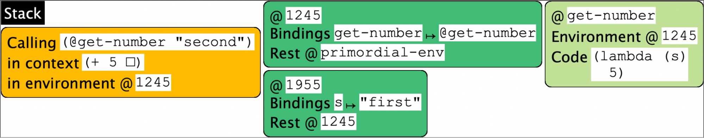

Consider a program like this:
print(read("First number") + read("Second number"))
Imagine we were to run this program on a traditional command-line operating system. What happens when we call read? The operating system’s synchronous input-reading commands are invoked: synchronous meaning that the program suspends its execution—that is, the stack stays intact—waiting for the user to respond (if ever they do), and when they do, the program’s stack resumes, with the value typed in by the user becoming the value returned by read.
This seems so straightforward that we might never think twice about how remarkable this ability is. To understand that, we should try to run this program on the Web. When we do, we run headlong into a central problem on the Web: that there is no such thing as a “read” operation. Why not?
On the Web, a hypothetical read function can certainly send the prompt to the client. In principle, it should then wait for the client to respond with a value, which it returns. However, the stateless nature of the Web means that this can’t happen: the program has to terminate. This is an asynchronous operation. When the user responds (if they ever do), there is no computation waiting to go back to.
Therefore, a Web computation has to be arranged in a very different way. The programmer must manually remember the rest of the computation, and store it somewhere. For instance, we would break up the above program in the following way: what is going to be done next:
read("First number")
and what is waiting for the result:
print(• + read("Second number"))
(This is, of course, our old friend, a context.) But whereas the context is implicit on the program’s stack, because the program must terminate, the context needs to be written out explicitly. Of course, • is not a program operation; rather, we can think of the context as a function of one argument:
lam(•1): print(•1 + read("Second number"))
and this is the function that is stored in a way associated with the outgoing prompt. Then, when (if) the user responds, their response value is bound to •1, allowing the program to resume. Suppose, for instance, the user types 5. Then this program effectively becomes
print(5 + read("Second number"))
This needs to also perform a Web interaction, so we again split it into what must happen now
read("Second number")
and what is waiting for the result:
print(5 + •)
which we can represent as a function:
lam(•2): print(5 + •2)
If and when the user resumes, this function is applied to the value they supply, and the result prints as we would expect.
This explanation glosses over some important details. Real program evaluation, as we have seen, does not proceed by rewriting programs, so the second function is not really
lam(•2): print(5 + •2)
but rather a closure with the body
lam(•2): print(•1 + •2)
closed over an environment where •1 is bound to 5. Getting into these details is interesting from a Web architecture perspective, but for us, all we care about is that contexts must be saved and restored.
We can simulate the above using the Stacker, provided we forego the input operation and pretend it always returns some constant:
#lang stacker/smol/hof
(deffun (get-number s)
5)
(+ (get-number "first") (get-number "second"))
At the point of the second call, we see that the state looks like this:
